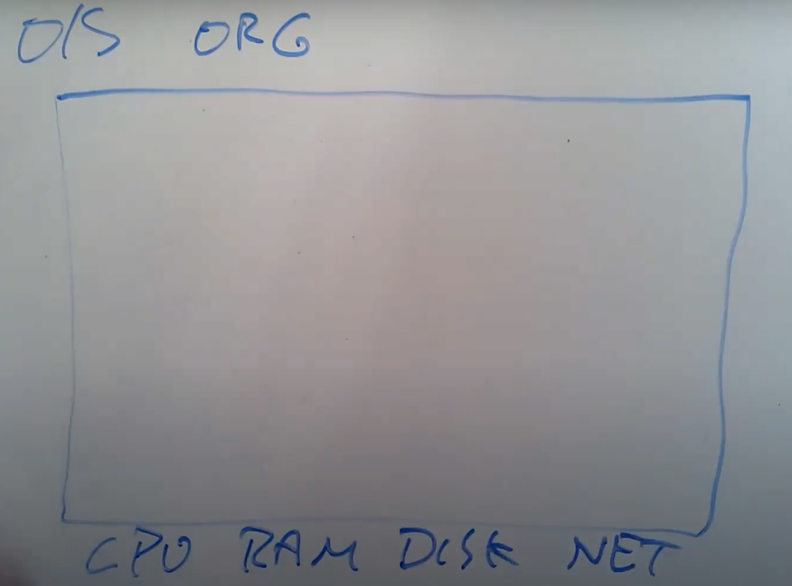

1.2 操作系统结构
过去几十年，人们将一些分层的设计思想加入到操作系统中，并运行的很好。我将会为你列出操作系统经典的组织结构，这个组织结构同时也是这门课程的主要内容，这里的组织结构对于操作系统来说还是挺常见的。
这里实际上就是操作系统内部组成，当我想到这里的组织结构时，我首先会想到用一个矩形表示一个计算机，这个计算机有一些硬件资源，我会将它放在矩形的下面，硬件资源包括了CPU，内存，磁盘，网卡。所以硬件资源在最低一层。

在这个架构的最上层，我们会运行各种各样的应用程序，或许有一个文本编辑器（VI），或许有一个C编译器（CC），你还可以运行大量我们今天会讨论的其他事物，例如作为CLI存在的Shell，所以这些就是正在运行的所有程序。这里程序都运行在同一个空间中，这个空间通常会被称为用户空间（Userspace）。
.png>)
区别于用户空间程序，有一个特殊的程序总是会在运行，它称为Kernel。Kernel是计算机资源的守护者。当你打开计算机时，Kernel总是第一个被启动。Kernel程序只有一个，它维护数据来管理每一个用户空间进程。Kernel同时还维护了大量的数据结构来帮助它管理各种各样的硬件资源，以供用户空间的程序使用。Kernel同时还有大量内置的服务，例如，Kernel通常会有文件系统实现类似文件名，文件内容，目录的东西，并理解如何将文件存储在磁盘中。所以用户空间的程序会与Kernel中的文件系统交互，文件系统再与磁盘交互。
在这门课程中，我们主要关注点在Kernel、连接Kernal和用户空间程序的接口、Kernel内软件的架构。所以，我们会关心Kernel中的服务，其中一个服务是文件系统，另一个就是进程管理系统。每一个用户空间程序都被称为一个进程，它们有自己的内存和共享的CPU时间。同时，Kernel会管理内存的分配。不同的进程需要不同数量的内存，Kernel会复用内存、划分内存，并为所有的进程分配内存。
文件系统通常有一些逻辑分区。目前而言，我们可以认为文件系统的作用是管理文件内容并找出文件具体在磁盘中的哪个位置。文件系统还维护了一个独立的命名空间，其中每个文件都有文件名，并且命名空间中有一个层级的目录，每个目录包含了一些文件。所有这些都被文件系统所管理。
这里还有一些安全的考虑，我们可以称之为Access Control。当一个进程想要使用某些资源时，比如读取磁盘中的数据，使用某些内存，Kernel中的Access Control机制会决定是否允许这样的操作。对于一个分时共享的计算机，例如Athena系统，这里可能会变得很复杂。因为在Athena系统中，每一个进程可能属于不同的用户，因此会有不同Access规则来约定哪些资源可以被访问。
在一个真实的完备的操作系统中，会有很多很多其他的服务，比如在不同进程之间通信的进程间通信服务，比如一大票与网络关联的软件（TCP/IP协议栈），比如支持声卡的软件，比如支持数百种不同磁盘，不同网卡的驱动。所以在一个完备的系统中，Kernel会包含大量的内容，数百万行代码。
.png>)
这就是对于Kernel的一个快速浏览。
我们同时也对应用程序是如何与Kernel交互，它们之间的接口长什么样感兴趣。这里通常成为Kernel的API，它决定了应用程序如何访问Kernel。通常来说，这里是通过所谓的系统调用（System Call）来完成。系统调用与程序中的函数调用看起来是一样的，但区别是系统调用会实际运行到系统内核中，并执行内核中对于系统调用的实现。在这门课程的后面，我会详细介绍系统调用。现在，我只会介绍一些系统调用在应用程序中是长什么样的。
第一个例子是，如果应用程序需要打开一个文件，它会调用名为open的系统调用，并且把文件名作为参数传给open。假设现在要打开一个名为“out”的文件，那么会将文件名“out”作为参数传入。同时我们还希望写入数据，那么还会有一个额外的参数，在这里这个参数的值是1，表明我想要写文件。
.png>)
这里看起来像是个函数调用，但是open是一个系统调用，它会跳到Kernel，Kernel可以获取到open的参数，执行一些实现了open的Kernel代码，或许会与磁盘有一些交互，最后返回一个文件描述符对象。上图中的fd全称就是file descriptor。之后，应用程序可以使用这个文件描述符作为handle，来表示相应打开的文件。
如果你想要向文件写入数据，相应的系统调用是write。你需要向write传递一个由open返回的文件描述符作为参数。你还需要向write传递一个指向要写入数据的指针（数据通常是char型序列），在C语言中，可以简单传递一个双引号表示的字符串（下图中的\n表示是换行）。第三个参数是你想要写入字符的数量。
.png>)
第二个参数的指针，实际上是内存中的地址。所以这里实际上告诉内核，将内存中这个地址起始的6个字节数据写入到fd对应的文件中。
另一个你可能会用到的，更有意思的系统调用是fork。fork是一个这样的系统调用，它创建了一个与调用进程一模一样的新的进程，并返回新进程的process ID/pid。这里实际上会复杂的多，我们后面会有更多的介绍。
.png>)
所以对吧？这些系统调用看起来就跟普通的函数调用一样。系统调用不同的地方是，它最终会跳到系统内核中。
这里只是浅尝辄止，我们后面会介绍更多。所以这些是一些快速预览。